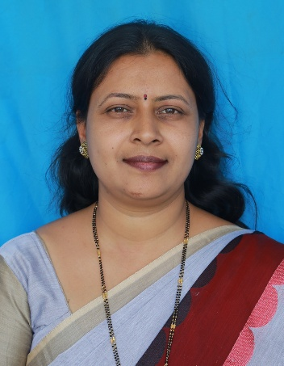
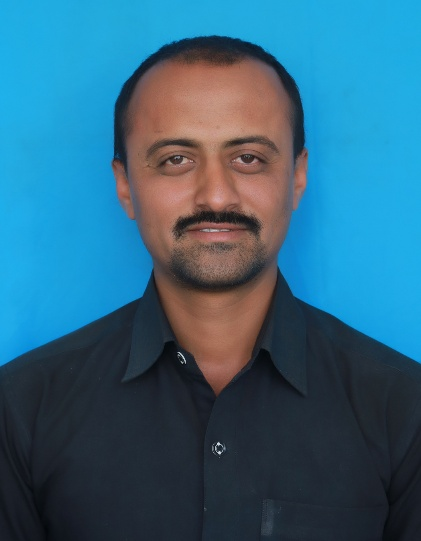
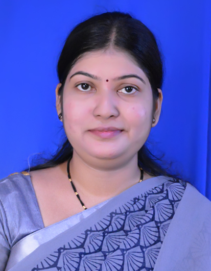
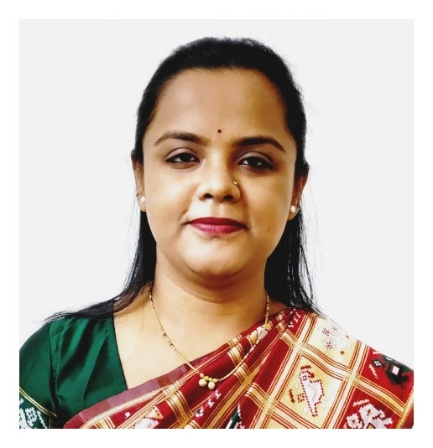
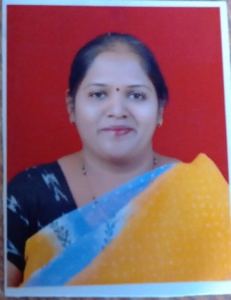
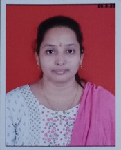
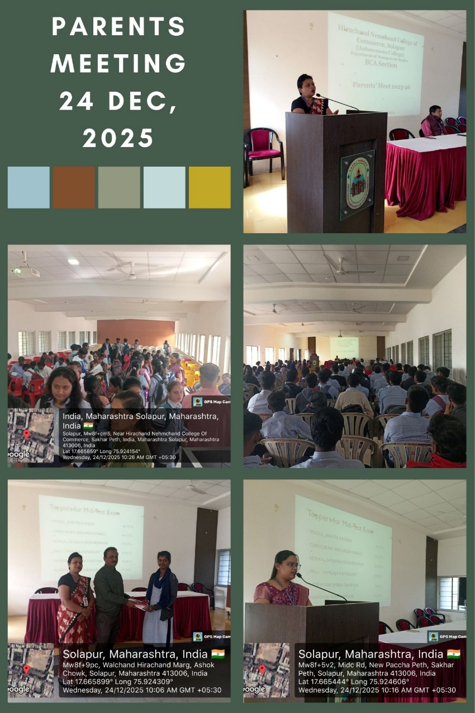

Programmes
Explore our academic programmes — MBA, BCA & BBA
About Department
The Bachelor of Computer Applications (BCA) Department at Hirachand Nemchand College of Commerce, Solapur is a vital vision of the Department of Management Studies, established to provide quality education in computer applications and modern information technology.
Overview
The BCA programme was introduced in 2004, marking the beginning of a professional computing education at the college.
The department aims to develop competent professionals who are well-versed in computing principles, logical thinking, software development, and enterprise information systems. It combines theoretical foundations with practical learning experiences to prepare students for dynamic careers in the IT industry and beyond.
Faculty Expertise
The department is supported by experienced faculty members with strong academic and industry experience, specializing in key areas such as computer applications, programming languages, database systems, software projects, and Microsoft technologies.
Mission & Focus
- Deliver a curriculum that integrates computing fundamentals and business practices with hands-on experience.
- Foster analytical thinking and technical expertise in software development, web technologies, and enterprise systems.
- Encourage industry readiness and practical exposure through seminars, guest lectures, competitions, and certification courses.
BCA trains students in programming, web & app development, databases, and modern technologies like AI, Data Science, and Full Stack Development to build a strong IT career.
In BCA, students learn to:
- Code in C, C++, Java & Python
- Develop websites & applications
- Work with databases & software tools
- Understand AI, Data Science & Full Stack basics
- Build real-world projects and problem-solving skills
Outcome: Industry-ready IT professionals.
Career Opportunities
Graduates can pursue roles such as Full Stack Developer, Data Scientist, AI/ML Developer, Web Developer, Software Engineer, and Database Administrator.
PO, PSO & PEO
BCA – Program Educational Objectives (PEOs)
After graduation, BCA students will be able to:
- PEO 1: Apply strong foundational knowledge of computing and software development in professional IT roles.
- PEO 2: Demonstrate skills to design, develop and implement effective IT solutions in industry or entrepreneurial ventures.
- PEO 3: Exhibit professional and ethical behavior, leadership, teamwork and lifelong learning in evolving technologies.
BCA – Programme Outcomes (POs)
On completion of the BCA program, students will be able to:
- PO1: Understand and apply core computing principles and tools to solve real-world problems.
- PO2: Analyze problems and design software applications using modern technologies.
- PO3: Develop efficient, scalable and secure software solutions.
- PO4: Use current IT tools for development, testing and deployment of applications.
- PO5: Communicate effectively with stakeholders through reports and presentations.
- PO6: Work collaboratively in teams and manage projects.
- PO7: Engage in continuous learning and adapt to technological changes.
BCA – Program Specific Outcomes (PSOs)
Upon successful completion of the BCA program, students will be able to:
- PSO1: Develop proficiency in software development life cycle, programming, web and mobile application design.
- PSO2: Apply database, networking and data analysis skills to create IT solutions.
- PSO3: Demonstrate problem-solving abilities and leverage computing tools for industry demands.
Faculty
The BCA Department is supported by experienced faculty members with strong academic and industry experience, specializing in key areas such as computer applications, programming languages, database systems, software projects, and Microsoft technologies.
Ms. Anita M. Rooge
She deals with subject to Computer Application and also specialization subjects to Computer Languages and Database.

Mr. Manjunath S. Manure
He deals with subjects related to Computer Application and also specialization subjects in Computer Languages and Software Testing.

Mrs. Sheetal R. Hundekari
She deals with subjects related to Computer Application and also specialization subjects in Computer Languages & Microsoft Technologies.

Mr. Hanmant V. Konade
He deals with subjects related to Computer Application and also specialization subjects in Computer Languages and Software Projects.
Industrial Experience: Worked as a Software Developer at Implant techno soft Pvt. Ltd.
Mrs. Bhagyashri A. Gore
She deals with subjects related to Computer Application and also specialization subjects in Computer Languages and Software Projects.
Industrial Experience: 6+ Yrs, Worked as a Software Developer at TCS Co. and Emtec Co.

Mrs. Gayatri V. Ligade
She deals with subjects related to Computer Application and also specialization subjects in Computer Languages and Software Projects.

Ms. Gayatri A. Bengiri
She deals with subjects related to Computer Application and also specialization subjects in Computer Languages and Software Projects.

Ms. Avantika U. Jeure
She deals with subjects related to Computer Application and also specialization subjects in Computer Languages and Software Projects.
Academic & Co-Curricular Activities
The BCA Department regularly organizes a variety of activities to enhance student engagement and learning:
Academic Activities
- Annual Seminars on contemporary IT topics like Salesforce Platform, Blockchain Technology, Machine Learning, Big Data Analytics, and more.
- Guest lectures, industrial visits, and technical competitions that provide exposure to current industry trends.
- Inter-Collegiate IT Quiz Competitions to promote awareness of information technology among students in the Solapur district.
- Certification Courses, including areas such as Hardware and Networking to enhance practical skills.
Extra-Curricular Activities
- Commerzarena — management & commerce fest
- Udyamdeep — entrepreneurship event
- Tech Master — technical fest
- Aarohi — cultural festival
These activities foster leadership, innovation, technical skills, and creativity among students.
Syllabus
Hirachand Nemchand College of Commerce (Autonomous), Solapur offers an AICTE-approved Honors Degree in Bachelor of Computer Applications (BCA) for the academic year 2025–26 as per DTE norms. The program follows an AICTE model curriculum with industry-relevant pedagogy to prepare students for successful IT careers.
Key Highlights
- Industry-oriented curriculum with advanced specializations
- Experienced faculty and expert lectures
- State-of-the-art computer labs & digital classrooms
- Skill-based certifications, seminars & workshops
- Book bank, e-library & 24×7 internet facility
- Scholarships as per government norms
Specialisation
The BCA programme offers three industry-aligned specialisations from the second year, allowing students to develop deep expertise in their chosen domain.
Career Opportunities
Graduates can pursue roles such as Full Stack Developer, Data Scientist, AI/ML Developer, Web Developer, Software Engineer, and Database Administrator.
Certification Courses
To enhance practical skills and industry readiness, the BCA program offers the following value-added certification courses:
Learn the principles of user interface and user experience design, including wireframing, prototyping, and design tools to create intuitive and user-friendly digital products.
Develop cross-platform mobile applications using Flutter and Dart, with a focus on UI design and real-time app development.
Master front-end and back-end web technologies using Java, along with an introduction to Artificial Intelligence and Machine Learning to build smart, scalable, and dynamic applications.
Parents Meet & Orientation Program
The BCA Department conducts structured orientation and parents' meet programmes to foster a transparent, communicative relationship between the institution, students, and their families.

Conducted at the start of each academic year for newly admitted BCA students. Covers introduction to the college, department, faculty, curriculum structure, rules & regulations, library resources, and placement cell.
Parents are invited to meet faculty, understand the academic calendar, discuss attendance norms, internal assessment schemes, and address queries regarding their ward's progress and college expectations.